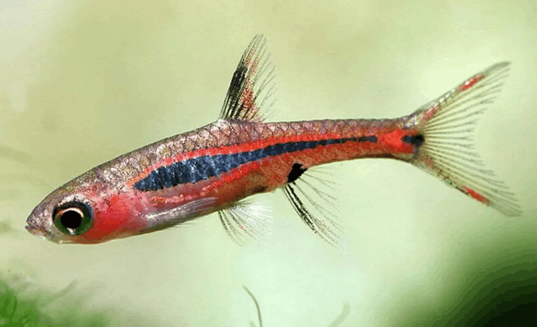

Systématique
- Ordre : Cypriniformes
- Famille : Danionidae
- Genre : Boraras
- Espèce : B. brigittae

Boraras brigittae, communément appelé Rasbora moustique ou Chili Rasbora, est un poisson minuscule originaire du sud-ouest de Bornéo. Il a été décrit par Dieter Vogt en 1978.
C'est l'un des plus petits poissons d'aquarium au monde, mesurant à peine 1,5 à 2,0 cm à l'âge adulte. Il est très recherché pour sa coloration spectaculaire : les mâles dominants arborent un corps rouge rubis intense, traversé par une ligne latérale noire continue, elle-même surmontée d'un trait rouge vif très lumineux.
Il est souvent confondu avec des espèces proches comme Boraras merah (qui possède une ligne noire discontinue et une tache ronde) ou Boraras urophthalmoides (qui est plus orange/brun avec une ligne noire plus fine).
C'est un poisson de banc qui doit impérativement être maintenu en groupe d'au moins 10 individus (l'idéal étant 15-20). Isolé, il est extrêmement timide, perd ses couleurs et reste caché.
Très paisible, c'est le candidat parfait pour les nano-aquariums plantés et les bacs à crevettes (Neocaridina ou Caridina), car sa bouche est trop petite pour prédater les crevettes adultes ou juvéniles. Il ne doit pas être associé à des poissons vifs ou de grande taille qui le stresseraient ou le mangeraient.
Mode : ovipare (diffuseur d'œufs).
La reproduction est continue : les mâles paradent quotidiennement. Les femelles pondent quelques œufs minuscules par jour parmi la végétation fine (mousse de Java). Il n'y a pas de soins parentaux.
Bien que les adultes ne chassent pas activement leurs alevins s'ils sont bien nourris, le taux de survie en bac communautaire est faible. Les alevins sont microscopiques et nécessitent des infusoires ou des paramécies pour survivre les premiers jours.
Dimorphisme sexuel : Très marqué chez les adultes. Les mâles sont d'un rouge écarlate intense et sont plus sveltes. Les femelles sont plus rondes, plus grandes et présentent une coloration plus terne, tirant sur l'orange pâle ou le rose.
Espérance de vie : Étonnamment longue pour sa taille, entre 3 et 5 ans, voire plus dans des conditions optimales (eau acide).
Il est endémique de la partie indonésienne de l'île de Bornéo (Kalimantan). Il vit exclusivement dans les marais tourbeux d'eau noire ("blackwater").
L'eau de son habitat est très calme, teintée couleur thé par les tanins (feuilles en décomposition, tourbe), très douce et acide (pH pouvant descendre à 4.0). La lumière y est tamisée par la canopée forestière.
Répartition

Origine naturelle :
- Asie du Sud-Est.
- Indonésie (Endémique de Bornéo).
- Sud-Ouest de Kalimantan.
Paramètres de maintenance
Température : 24 à 28 °C.
pH : 4,0 à 7,0 (préfère l'eau acide, idéalement pH 5.0 - 6.5).
GH : 1 à 10 °dGH (eau douce recommandée).
Volume conseillé : Minimum 30 à 40 L. Bien que minuscule, il a besoin de nager et la stabilité des paramètres est cruciale pour une si petite espèce.
Régime alimentaire
Régime : carnivore / insectivore (micro-prédateur).
Dans la nature, il se nourrit de zooplancton et de minuscules insectes.
En aquarium, la taille de la nourriture est le facteur limitant. Il faut des paillettes réduites en poudre, des nauplies d'artémias, des micro-vers ou des daphnies très petites.